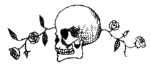

Albus Dumbledore'un “Üç Kardeşin Hikâyesi”
Üzerine Notları
Bu hikâyenin küçük bir erkek çocukken benim üzerimde çok derin bir etkisi oldu. Önce annemden dinlemiştim ve çok geçmeden yatma vaktinde diğerlerinin hepsinden daha sık anlatılmasını istediğim hikâye halini aldı. Bu da sık sık, en sevdiği hikâye "Kirli Keçi Homurdak" olan erkek kardeşim Aberforth'la aramızda tartışmaya yolaçtı.
Üç Kardeşin Hikâyesi'nden çıkarılacak ahlak dersi ancak bu kadar açık olabilir: insanların ölümden kaçma ya da ölüme üstün gelme çabaları daima hayal kırıklığı uğramaya mahkûmdur. Hikâyedeki üçüncü kardeş ("en alçak gönüllüsü ve aynı zamanda en bilgesi") bir keresinde Ölüm'den ucu ucuna kurtulmuş biri olarak en büyük umudunun ölümle bir sonraki buluşmalarını elinden geldiğince ertelemek olduğunu anlayan tek kişi. Bu en küçük kardeş, Ölüm'le alay etmenin –ilk kardeş gibi şiddete başvurmanın ya da ikinci kardeş gibi karanlık nekromansi{19} sanatıyla uğraşmanın– insanın kendisine rakip olarak kaybetmesi mümkün olmayan, düzenbaz bir düşman seçmesi anlamına geldiğini biliyor.
Ýşin komik yanı, bu hikâyenin etrafında, özgün hikâyenin mesajıyla tamamen çelişen tuhaf bir efsanenin gelişmiş olmasıdır. Bu efsane, Ölüm'ün kardeşlere verdiği armağanların –yenilmez bir asa, ölüleri geri getirebilen bir taş ve sonsuza kadar dayanan bir Görünmezlik Pelerini– gerçek dünyada varolan hakiki nesneler olduğu üzerinedir. Efsane daha da ileri gider: eğer herhangi birisi üçünün birden hakkıyla sahibi olursa, o kişi “Ölüm'ün Efendisi” olacaktır ki bu da genellikle incinmez hatta ölümsüz olacağı anlamına gelir.
Bunun insan tabiatı hakkında bize anlattıkları karşısında, biraz hüzünle de olsa, gülümseyebiliriz. En müşfik yorum şu olur: "Umut pınarı dinmez"{20}. Beedle'a göre, üç nesneden ikisinin son derece tehlikeli olmasına rağmen, Ölüm'ün sonunda hepimiz için geldiği yolundaki açık mesaja rağmen, büyücü toplumunun minik bir azınlığı, Beedle'ın onlara, mürekkeple yazılmış olanın tıpı tıpına tersi olan şifreli bir mesaj gönderdiğine ve yalnızca onların bu mesajı anlayacak kadar akıllı olduğuna inanmakta ısrar eder.
Kuramları (ya da belki "umutsuz umutlan" demek daha doğru olur) çok az gerçek kanıt tarafından desteklenmiştir. Hakiki Görünmezlik Pelerinleri, sayıları çok az olsa da, dünyamızda mevcuttur; ancak, hikâye Ölüm'ün Pelerini'nin eşi görülmemiş derecede dayanıklı nitelikte olduğunu açık şekilde belirtiyor.{21} Beedle'ın dönemi ile bizim dönemimiz arasında geçen onca yüzyılda kimse Ölüm'ün Pelerini'ni bulduğunu iddia etmemiştir. Bu da gerçek inananlar tarafından şöyle açıklanır: ya üçüncü erkek kardeşin soyundan gelenler Pelerinleri'nin nereden geldiğini bilmiyorlar ya da biliyorlar ve bu gerçeği herkese ilan etmeyen atalarının bilgeliğini göstermekte kararlılar.
Doğaldır ki taş da asla bulunmadı. "Babbitty Rabbit ve Kıkırdayan Kütüğü"nün yorumunda zaten belirttiğim gibi, ölüleri uyandırmamız hâlâ mümkün değil ve bunun asla gerçekleşmeyeceğini varsaymak için her türlü neden var. Tabii ki, Inferius'ları{22} yaratan Karanlık Büyücüler tarafından yerleri iğrenç bir şekilde doldurulmaya çalışıldı ama bunlar gerçekten yeniden uyandırılmış insanlar değil, berbat kuklalardır. Üstelik, Beedle'ın hikâyesi de ikinci kardeşin kayıp aşkının gerçek anlamıyla ölüler arasından dönmediği konusunda hayli açıktır. Kız, Ölüm tarafından, ikinci kardeşi Ölüm'ün pençesine düşürmek için yollanmıştır ve bu yüzden de soğuktur, uzaktır. Boşuna umut verecek şekilde hem vardır hem de yoktur.{23}
Bu durumda geriye asa kalıyor ve Beedle'ın gizli mesajına inatla inananlar, hiç değilse çılgına iddialarını destekleyecek biraz tarihi kanıta sahipler. Çünkü durum şudur ki –ister kendilerini göklere çıkarmaktan hoşlandıkları için, ister muhtemel saldırganların cesaretini kırmak için ya da dediklerine sahiden inandıklarından olsun– büyücüler çağlar boyunca sıradan asalardan daha güçlü bir asa, hatta “yenilmez” bir asa sahibi oldukları iddiasında bulunmuşlardır. Bu büyücülerden bazıları, sözde Ölüm'ün yaptığı asa gibi kendi asalarının da mürverden olduğunu iddia etmiştir. Böyle asalara, "Kader Asası" ve “Ölümdeğneği”nin de aralarında olduğu bir çok ad verilmiştir.
Nereden baksanız en önemli sihirli aletlerimiz ve silahlarımız olan asalarımız etrafında eski boş inançların gelişmiş olmasına şaşmamak gerek. Kimi asalann (ve dolayısıyla sahiplerinin) birbiriyle bağdaşmadığı söylenir:
Onun asası meşe, kızınki de çobanpüskülüyse, Düpedüz aptallık olur evlenirlerse.
Ya da sahiplerinin karakterindeki kusurları gösterirler denir:
Üvez dedikoducudur, kestane asalaktır.
Alıç inatçı ise fındık da ağlaktır.
Ve elbette, bu kanıtlanmamış sözler kategorisinde şunu da buluyoruz:
Mürverdense asan, hiç bitmez tasan.
Ya Ölüm Beedle'ın hikâyesindeki hayali asayı mürverden yaptığı için, ya da güç peşinde koşan veya şiddet dolu büyücüler ısrarla asalarının mürverden yapıldığını iddia ettiği için, asa yapımcıları arasında terchi edilen bir ağaç değildir.
Mürverden yapılmış, özellikle kuvvetli ve tehlikeli güçleri olan ilk asaya ilişkin olarak çoğunun “Gaddar” lakabıyla andığı, Emeric adlı, ortaçağın başlarında İngiltere'nin güneyine dehşet saçan kısa ömürlü ama son derece saldırgan büyücünün bahsi geçiyor. Nasıl yaşadıysa öyle öldü, Egbert denen bir büyücü ile vahşi bir düelloda. Egbert'in başına ne geldiği bilinmiyor ama ortaçağ düellocularının ortalama ömürleri genelde kısaydı. Karanlık Büyü'nün kullanımını düzenleyecek bir Sihir Bakanlığı'nın varlığından önceki günlerde, düellonun sonuçları çoğu kez ölümcüldü.
Tam bir yüzyıl sonra, bu sefer adı Godelot olan bir başka nahoş karakter, defterinde "en melun ve sinsi dostum, gövdesi Mürüvver'den{24} ve pek kötü sihir usulleri biliyor" diye tanımladığı bir asanın yardımıyla bir tehlikeli büyüler derlemesi yazarak Karanlık Sihir çalışmasını ilerletmişti. (Godelot'un şaheserinin adı En Habis Sihirler oldu.)
Görüldüğü gibi, Godelot asasına bir yardımcı, neredeyse bir hoca gözüyle bakıyor. Asa ilmi hakkında bilgisi olanlar{25} bu önceden tahmin edilemeyen ve kusurlu bir iş olsa da, asaların onları kullananların tecrübesini gerçekten özümsediğini kabul edecekler; insan, asanın belli bir bireyle ne kadar iyi bir performans gösterme ihtimali olduğunu anlamak için asa ile kullanıcısı arasındaki ilişki gibi her tür ek etmeni hesaba katmalı. Gene de, birçok Karanlık Büyücü'nün elinden geçtiğini varsayacağımız bir asanın, en tehlikeli sihir türlerine hiç değilse belirgin bir meyli olması muhtemeldir.
Çoğu cadı ve büyücünün, herhangi bir elden düşme asadansa, onları "seçmiş" olan bir asayı tercih etme nedenleri de tam olarak budur; çünkü ilkinin eski sahibinden yeni kullanıcının sihir üslubuna uygun olmayan alışkanlıklar edinmiş olma ihtimali vardır. Sahibi öldüğünde asayı da onunla birlikte gömme (ya da yakma) yolundaki genel uygulama da herhangi bir asanın haddinden fazla efendiden öğrenmesini önlemeye hizmet eder. Ancak, Mürver Asa'ya inananlar, bağlılığın sahipler arasında aktarılma yöntemi nedeniyle –bir sonraki efendi, çoğu kez öldürmek suretiyle, ilkini alteder– Mürver Asa'nın asla yokedilmediğini ya da gömülmediğini, ama varlığını sürdürüp sıradan olanların çok ötesinde bilgelik, kuvvet ve güç topladığını öne sürerler.
Godelot'un deli oğlu Hereward tarafından kilitlendiği kendi hücresinde öldüğü biliniyor.
Hereward'ın babasının asasını aldığını varsaymalıyız, yoksa babası kaçmayı başarırdı ama Hereward'ın daha sonra asa ile ne yaptığından emin olamayız. Kesin olan tek şey, sahibi Barnabas Deverill'in “Mürgen{26} Asası” dediği bir asanın on sekizinci yüzyıl başlarında ortaya çıktığı ve Deverill'in onu, korkutucu bir sihirbaz ününü hakedene kadar kullandığıdır, ta ki dehşet saltanatı kötülüğüyle aynı derecede ün salmış Loxias tarafından sona erdirilene kadar. Loxias asayı aldı, ona "Ölümdeğneği" adını verdi ve onu hoşuna gitmeyen herkesi yerle bir etmek için kullandı. Loxias'ın asasının daha sonraki tarihinin izini sürmek zor; çünkü aralarında kendi annesinin de bulunduğu birçok kişi, onun işini bitirdiğini iddia etti.
Mürver Asa'nın sözümona tarihini inceleyen herhangi bir zeki cadı ya da büyücünün gözüne çarpması gereken şey, ona eskiden sahip olduğunu{27} iddia etmiş her erkeğin onun "yenilmez" olduğunda ısrar etmiş olması. Oysa pek çok sahip arasında el değiştirmiş olduğu yolundaki bilinen gerçekler bile yalnızca yüzlerce kere yenildiğini değil, Kirli Keçi Homurdak'ın sinekleri çekmesi gibi, belayı üzerine çektiğini gösteriyor. Nihayetinde, Mürver Asa arayışı yalnızca uzun ömrüm boyunca birçok kez yapma fırsatını bulduğum bir gözlemi destekliyor: insanların, tam da kendileri için en kötü olan şeyleri seçme gibi bir marifetleri var.
Ama, Ölüm'ün armağanları arasından bir seçme yapma fırsatı verilseydi, aramızdan hangisi üçüncü kardeşin gösterdiği bilgeliği gösterebilirdi? Büyücüler de, Muggle'lar da güce karşı ihtirasla doludur; kaç tanesi "Kader Asası"na karşı direnebilirdi? Hangi insan, sevdiği kişiyi kaybedince Diriltme Taşı'nın aklını çelmesine karşı koyabilirdi? Ben, Albus Dumbledore bile Görünmezlik Pelerini'ni reddetmeyi en kolayı bulurdum; bu da, ne kadar akıllı olsam bile, gene de hâlâ herkes kadar büyük bir budala olduğumu gösteriyor.
